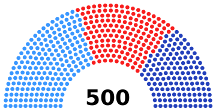

문서 생성일
2024년 2월 24일 토요일, 오후 7:32:44
문서 수정일 2024년 2월 25일 일요일, 오후 8:08:03
2024년 2월 28일 수요일, 오후 4:41:48
2024년 4월 10일 수요일, 오후 8:14:36
2024년 4월 10일 수요일, 오후 8:15:58
문서 수정일 2024년 2월 25일 일요일, 오후 8:08:03
2024년 2월 28일 수요일, 오후 4:41:48
2024년 4월 10일 수요일, 오후 8:14:36
2024년 4월 10일 수요일, 오후 8:15:58
|
제66대 다트라이렌 하원의원 선거 Datérairen Rapublica |
||||||||||||||||||||||||||
|---|---|---|---|---|---|---|---|---|---|---|---|---|---|---|---|---|---|---|---|---|---|---|---|---|---|---|
|
2021년 2월 17일 65대 하원선 |
→ |
2024년 2월 21일 66대 하원선 |
→ |
2027년 2월 17일 67대 하원선 |
||||||||||||||||||||||
| 투표율 | 66.81% | |||||||||||||||||||||||||
| 선거 결과 | ||||||||||||||||||||||||||
|  | ||||||||||||||||||||||||||
| 정당 | 지역구 | 비례 대표 |
총합 | 비율 | ||||||||||||||||||||||
| 보수동맹 | 145석 | 57석 | 202석 | 40.4% | ||||||||||||||||||||||
| 자유당 | 135석 | 22석 | 157석 | 31.4% | ||||||||||||||||||||||
|
미래민주 연합 |
126석 | 15석 | 141석 | 28.2% | ||||||||||||||||||||||